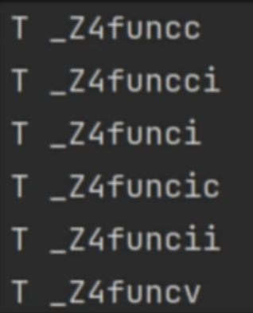

语言基础
C/C++基础
命名空间
定义
namespace是单独的作用域 两者不会相互干涉
1 2 3 4 5 6 7 8 9 10 11 12 13 14 15 16 17 18 19 20 namespace 名字namespace nameA {int num;void func () "nameA" ;namespace nameB {int num;void func () "nameB" ;
使用
::作用域操作符， 空间名::成员
1 cout << nameA::num<< "==" << nameB::num << endl;
注意
1 2 3 4 5 6 7 8 9 namespace nameA {namespace A {int num;int num;void func () "nameA" ;
命名空间声明和实现可以分割开来
命名空间可以起别名
1 2 3 4 5 6 7 8 9 namespace studentInfoHandle {int id, age;void studying () "i am studying" << endl;namespace sIH = studentInfoHandle;
引用
基本
引用可以看作一个已定义变量的别名
语法：Type&name=var;
注意：
&在这里不是求地址运算，而是起标识作用
类型标识符是指目标变量的类型
必须在声明引用变量时进行初始化
引用初始化后不能改变（值可以变 引用不可变=》不可以引用其他的变量）
不能有NULL引用。必须确保引用是一块合法的存储单元的关联
1 2 3 4 5 6 7 8 9 10 11 12 13 14 15 16 17 18 int a = 50 ;int & b = a;100 ;int & c = a;500 ;
本质
引用的本质是一个常指针 ，也就是指针常量 int * const p 引用和指针没有本质的区别
秘籍：
const在前，内容不能变；
const在后，指针不能变；
引用所占空间 大小和指针相同
1 int &p=a; == int * const p=&a;
引用作为参数
引用作为其他变量的别名存在 一些场合下可以替代指针
引用相比于指针有更好的可读性和实用性
1 2 3 4 5 6 7 8 9 10 11 12 13 14 15 16 17 18 19 20 typedef struct Teacher {int id, age;void changeT (Teacher& t) 100 ;50 ;changeT (t);
引用和const
C++也对引用做了特别的处理。
如果引用的数据对象类型不匹配，当引用为const时，C++将创建临时变量，让引用指向临时变量 （这一点指针是做不到的）
1 2 3 4 5 6 7 8 9 10 11 12 13 void func (const int &x) func (5 );
将引用形参声明为const的理由：
使用const可以避免无意中修改数据
使用const使函数能够处理const和非const实参，否则将只能接受非const实参（常量）
使用const，函数能正确生成并使用临时变量
左值是可以被引用的数据对象，可以通过地址访问它们，例如: 变量、数组元素、结构体成员、用和解引用的指针
非左值包括字面常量(用双引号包含的字符串除外)和包含多项的表达式
内联函数
引出
宏 实现简单函数；宏操作在预处理阶段就是简单的文本替换 没有类型检查
1 2 3 4 #define ADD(x,y) x+y int res = ADD (20 ,10 )*10 ;
因此引出了内联函数，内联函数是一个真正的函数，但是没有函数的调用开销，又像普通函数一样可以传参返回值
相比于宏：既保持了宏函数的效率，又增加了安全性。
概念
定义inline void func(){}
注意
推荐使用内联函数替代宏代码片段
内联函数在最终生成的代码中是没有定义的，所有内联函数的作用域可以理解位只在定义的文件中。那个文件调用那个文件就要定义，不能跨文件访问
内联函数的内容会嵌入到主程序。速度快，占内存高
inline只是对编译器的一个内敛请求，c++内敛编译会有一些限制，以下情况编译器可能考虑不将函数进行内敛编译：
存在任何形式的循环语句
存在过多的条件判断语句
函数体过于庞大
对函数进行取址操作
函数补充
默认参数
1 2 3 4 5 6 7 8 int func (int r,double PI=3.14 ) int func (int r,double PI) int func (int r=1 ,int f)
注意事项
默认参数后面得参数必须都是默认参数
带有默认参数函数被声明了，那么实现的时候就不需要传入默认参数了
函数重载
c中
1 2 3 4 void func () void func (int x)
c++中函数重载定义
同一个函数名定义不同的函数
条件
作用域相同
参数的个数不同
参数的类型不同
参数的顺序不同
1 2 3 4 5 6 7 8 9 10 11 12 13 14 15 namespace function0 {void fun () "func" << endl;}void fun (int x) "func(int x)" << endl;}void fun (int x,int y) "func(int x,int y)" << endl;}void fun (int x,char y) "func(int x,char y)" << endl;}void fun (char x, int y) "func(char x,int y)" << endl;}fun ();fun (1 );fun (1 ,2 );fun (1 , 'a' );fun ('a' , 1 );
原理
编译器在将程序编译完成后会将变量和函数变成一个个的符号，存放这些符号的表格称为符号表
对程序进行编译查看对应函数的符号
1 2 3 4 5

g++编译器在将函数转化为符号时，根据函数名、形参类型 进行转化
如果使用g++编译c语言含义函数重载的代码，是编译成功的。
const详解
const int buf = 512;编译器在编译阶段会把buf替换为512
修饰普通变量
被修饰的对象是只读的
看const修饰谁的时候可以将变量类型删除，然后就近原则
1 2 3 4 5 6 7 8 9 10 11 const int a = 10 ; const int *p1 = &a; int const *p2 = &a; const int * const p3=&a;int const * const p4 = &a;
修饰成员变量
const修饰成员变量，表示成员变量是只读的，不能被修改
只能在初始化列表 中赋值
1 2 3 4 5 class I {public :const int x;I ():x (100 ){};
修饰成员函数
使用const修饰的成员函数，该函数为类的常成员函数 ，不能改变对象的成员变量
成员变量使用mutable修饰可以突破const的修饰
const放在 函数名称(形参列表) 的后面，增强代码可读性
1 2 3 4 5 6 7 8 class I {public :int x;int getX () const return x;
注意：const不能修饰全局函数
修饰对象
const修饰的对象是常量对象 ，其中任何变量都不可以被修改
const修饰的对象只能访问const修饰的成员函数
调用非const修饰的成员函数可能修改成员变量的值，这违背了const修饰对象的原则
const修饰的对象可以访问public成员变量，但是不能修改
1 2 3 4 5 6 7 8 9 class Y {public :int x;Y ():x (100 ){}void get ()
修饰引用
1 2 3 4 5 void func (const Y &y)
修饰函数返回值
用的不多，含义和const修饰指针和普通变量的含义基本相同
1 2 3 4 5 6 7 8 9 10 11 12 13 14 15 16 17 18 19 20 21 22 23 24 25 26 27 28 29 30 31 32 33 34 35 36 37 38 39 40 41 42 43 44 45 const int fun () int x = 100 ;return x;const Y funY () return y;const char *func4 () char *p = new char [10 ];strcpy (p,"hello" );return p;const Y &fun5 (Y &t) return t;int x = fun (); funY ();const char *p = func4 (); fun5 (y);const Y &i = fun5 (y);